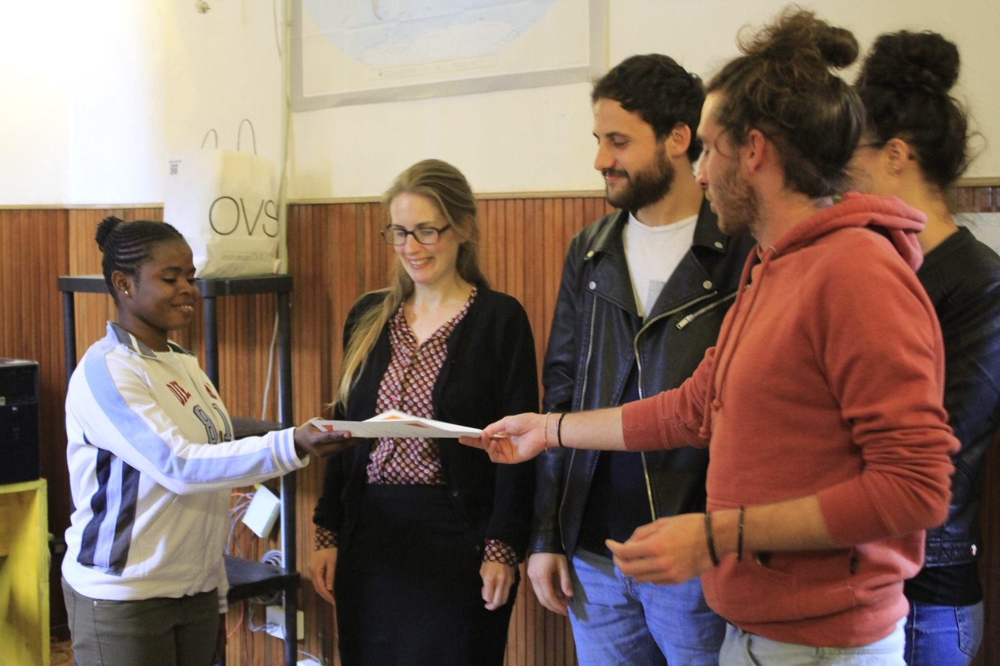

Language Tandem Workshop
The workshop consists in courses and language assistance to promote languages' knowledge, to bring different cultures closer, and to enrich the dialogue between people from different countries. All the courses are taught by volunteers who are native speakers or have a very high level of knowledge of the language. The peculiarity of our courses is the attempt to shape the teaching methods depending on the students' needs. We started with the following courses:
- English (time)
- French (time)
- Spanish (time)
- German (time)

Basic Computer Literacy classes
Course of Digital Literacy I:
We will learn how to switch on a computer and how to use its basic functions (computer resources; writing programs; opening, structuring and saving documents). This course is meant for beginners who have never worked on a computer before.
Course of Digital Literacy II:
We make a step forward moving to more advanced functions, as those needed for research projects. We will surf the internet, creating an email account, learning how to write an email, and we will use other programs like Google Drive. It is possible to attend both courses.
Transcultural Activities/workshops Also For Schools
Through intercultural workshops we will share knowledge and ideological information between cultures, in order to promote social cohesion and citizens' cohabitation. We will direct some of our activities to new generations and schools. We will deal with relevant topics as the value of transculturalism and how to benefit from it, as well as non-violent and intercultural communication.
Our workshops are characterized by interaction, which means that participants will have the chance to experience and experiment different strategies to build a serene cohabitation and atmosphere, as well as to get to know directly traditions and cultures, which are often unfamiliar but very present in the territory of Bologna. Each workshop will be conformed to the age of the participants, and it is open both to young people and to adults.


Story narratives and Exchange of best practises from different cultures of the World
Our program also helps and supports those who want to travel as responsible tourists, going beyond the famous touristic places enlisted on any guidebook. Our multinational team will offer specific information about their countries, to grant a special and unique trip. Those who decide to use our information network will be kindly requested to share with us their experience abroad with videos, pictures, and even audio material.
Multimedia Library for Responsible Tourism
Our program also helps and supports those who want to travel as responsible tourists, going beyond the famous touristic places enlisted on any guidebook. Our multinational team will offer specific information about their countries, to grant a special and unique trip. Those who decide to use our information network will be kindly requested to share with us their experience abroad with videos, pictures, and even audio material.
All the collected and archived material will be available in our multimedia library and shared during our events.
